- Ifeoma Ufondu, ifeomaufondu@wustl.edu, 442034
- Charlie Guise, c.a.guise@wustl.edu, 444228
- Brian
- Repo: https://github.com/Charlie-Guise/GameOfThrones_CSE457_FinalProject
Background and Motivation:
- We both have a love for the television show Game of Thrones. In preparation for the upcoming season we wanted to refresh our memories of the battles of Westeros. When we discovered this dataset, the opportunity to kill two birds with one stone presented itself. It was also a great chance to work with data that was neither specifically statistical in nature nor tedious.
- Charlie is currently in a Game of Thrones class, and choosing this topic allows him to refresh his memory on the fantasy world of Westeros—just in time for finals!
- This dataset is very rich and it provides us an opportunity to showcase everything we’ve learned this semester.
Project Objectives:
- Help determine who will sit on the throne at the end of the season.
- We want to understand the sacrifices made by the families through this visualization.
- The map allows us to see how widespread the war(s) were and how they progressed and affected each realm/family.
-
The Benefits include:
- A summary of the main events that have occurred
- A culmination of over seven years of television as well as 300 years of Westeros history.
- Helps better inform people to make predictions about the upcoming season.
Data:
- We are using a Game of Thrones dataset from Kaggle.
- https://www.kaggle.com/mylesoneill/game-of-thrones#battles.csv
Data Processing:
- The data is very organized, and the only preprocessing that we see in our future is dealing with filtering/sorting the different households.
-
Data to Derive:
- The overall battle sizes
- Members of each family
- When the site gets loaded up, all the processing will occur before anything loads on the screen
Visualizations:
- See images at the end.
Must-have Features:
- Map of Westeros with Battles Highlighted
- Selection method for the individual houses
- Zoom of some kind for map
- Incorporating house seals
- Battle details window
- House details window
Optional Features:
- Slide functionality of ‘House Menu’
- Windowed zoom that allows users to see the whole map
- Optional include commanders faces
- Scale data points on map based on battle size
- Data loading bar
Project Schedule:
-
Proposal: 3/18/19
- Map (make it visible)
- Map zoom
- Preprocessing done
-
Mile 1: 4/1/19
- Linking map to click events
- Housing selection/details
- Battle details
-
Mile 2: 4/15/19
- Visual clean up
- Work on optional features
-
User Study: 4/18/19
- Implement user feedback
-
Presentation: 4/23/19
- Final improvments
- Final checks
- Submission: 4/28/19
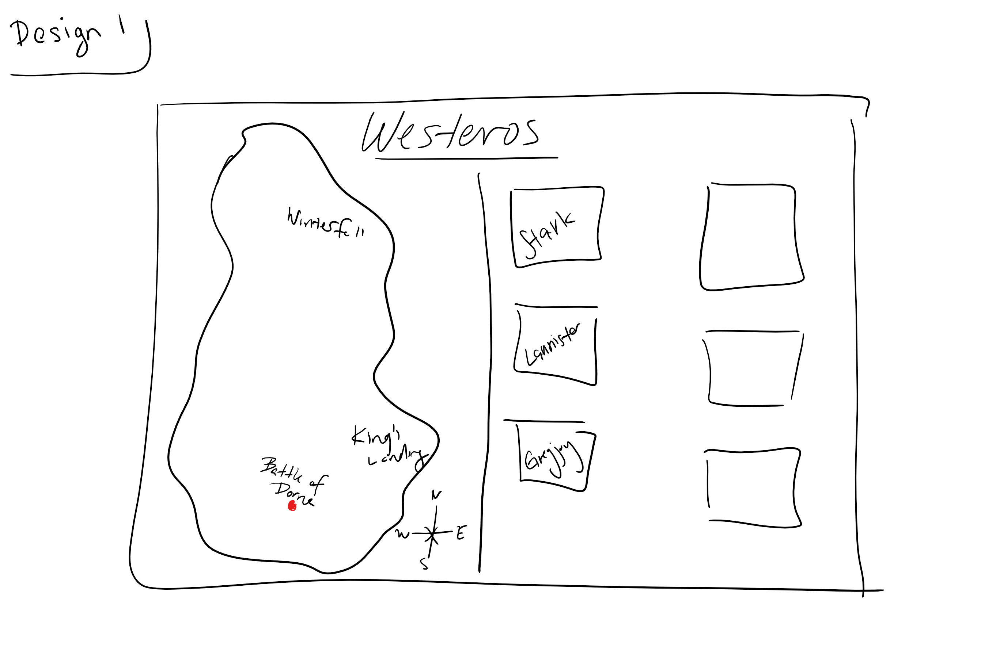
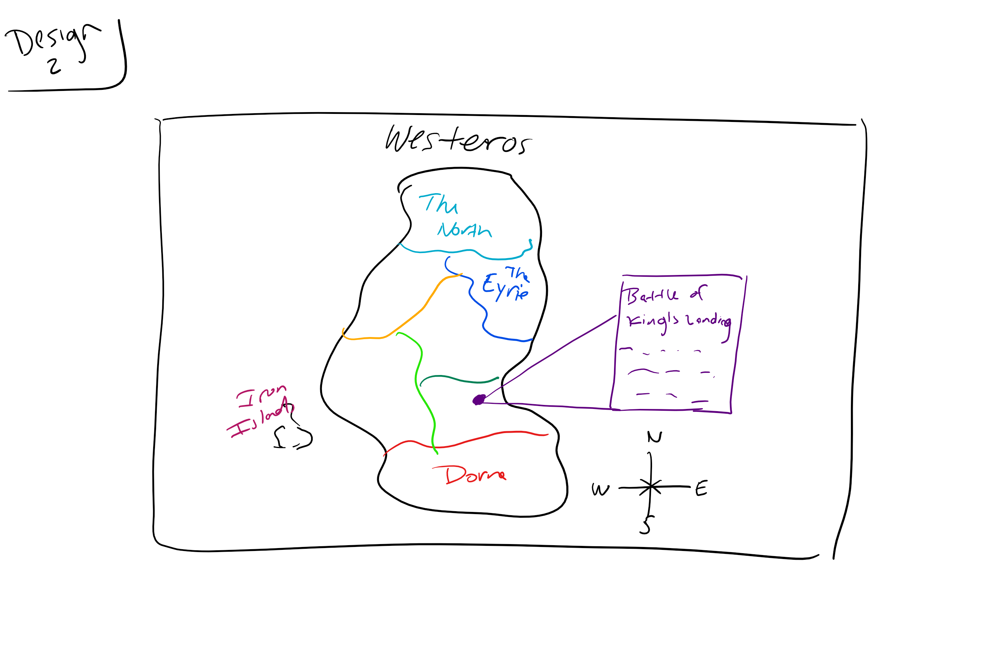
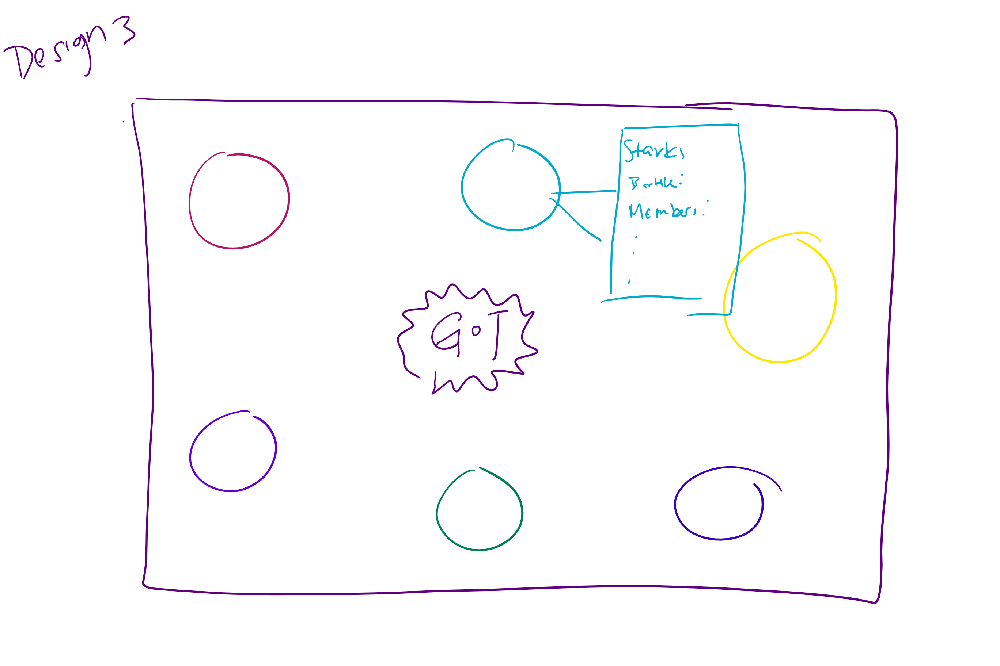
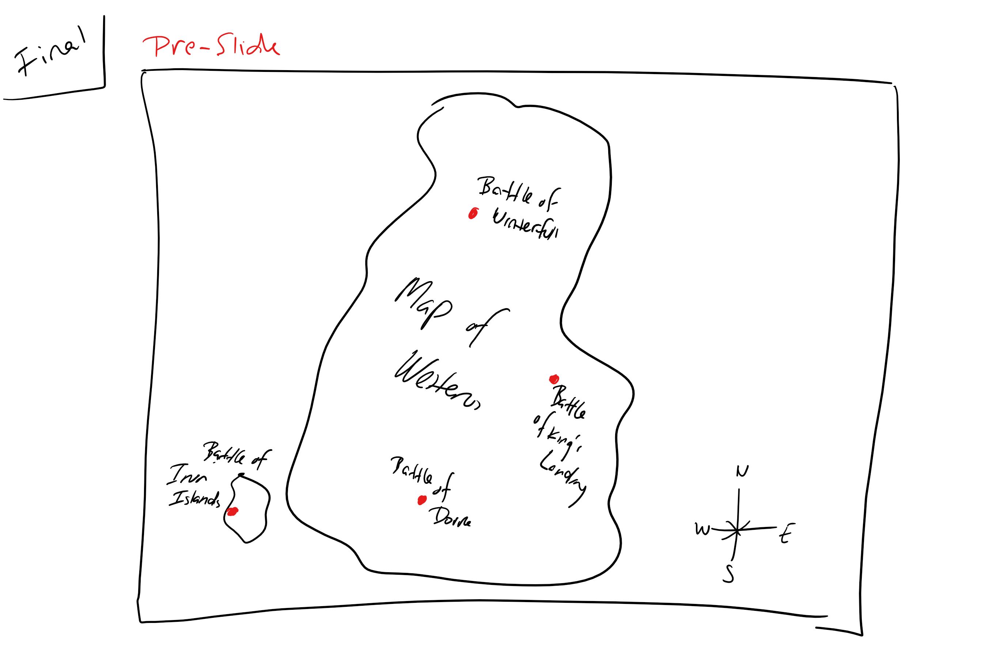
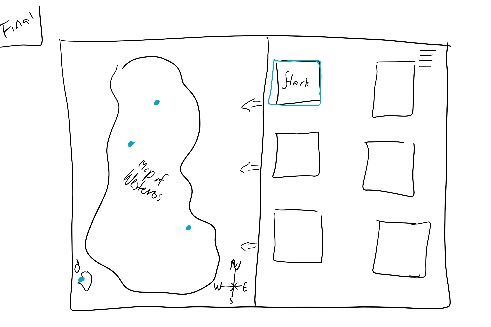
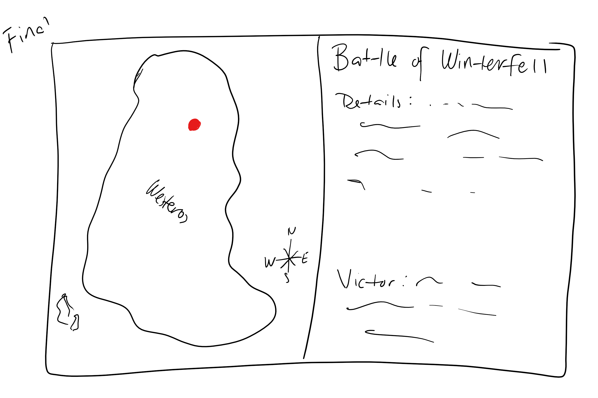
Design 1:
- Show both map and information at the same time
- Simplest way to show all the data at once
-
Downside:
- Map could appear too small depending on viewing window
- Information could be displayed whne they don't want it
Design 2:
- Goal to emphasize map
- Data would be accessible through pop-up windows
-
Downside:
- Data isn't prominent
- Constantly switching between pop-ups and map
Design 3:
- Emphasis on house details and information
- Display house data all at once
-
Downside:
- No map
- Too much data at once
- Less organized
Final Design:
- Combines the best of all parts
- Map is very prominent from the start
- Slide bar allows information to be readily accessible along with map
- Map prominence is up to user
- Data presentation is controlled by user events
- Data is divided with respect to topics
- Duality of views (split screen)
Update Milestone 1:
 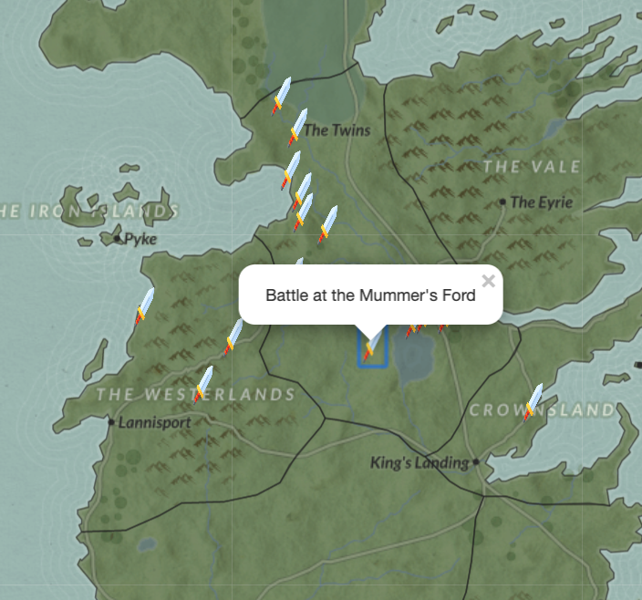
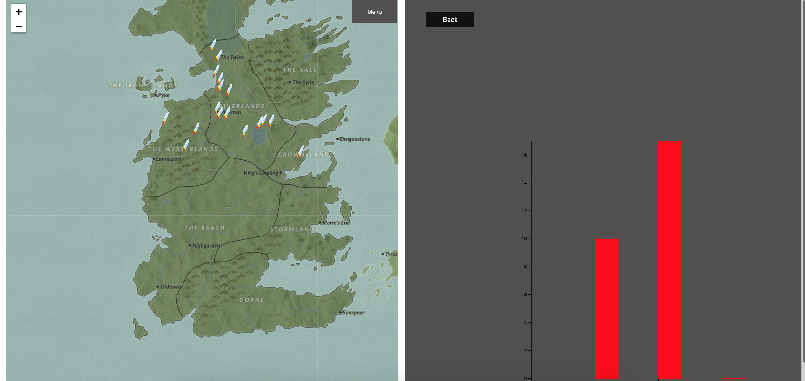
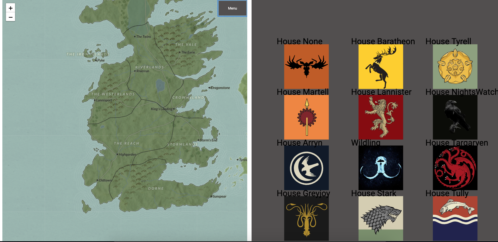
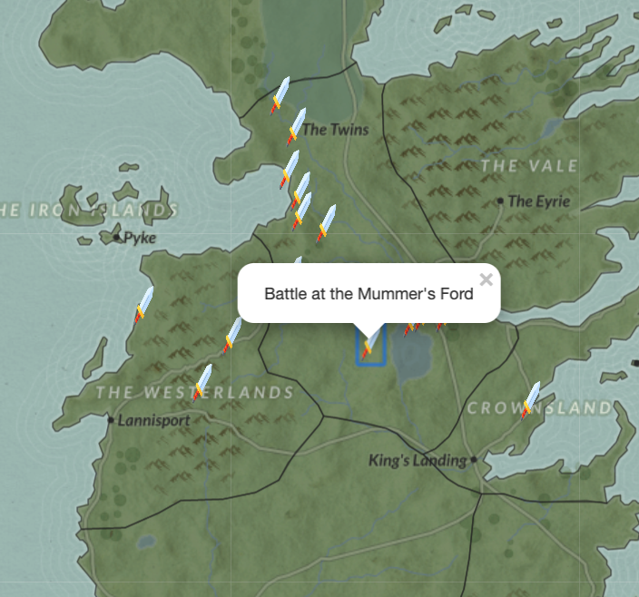
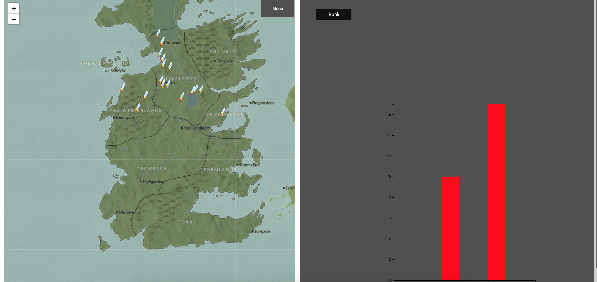
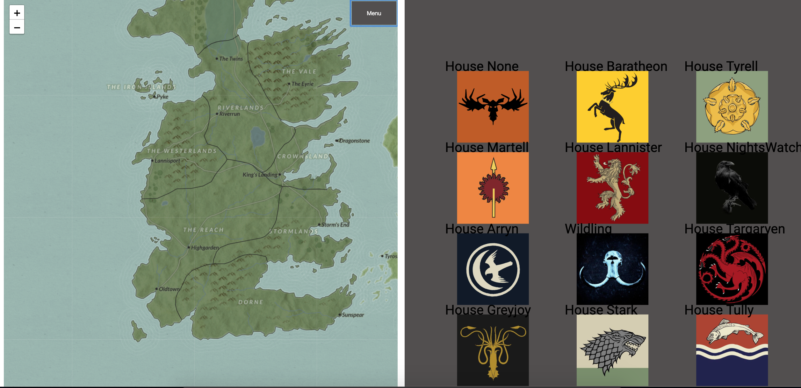
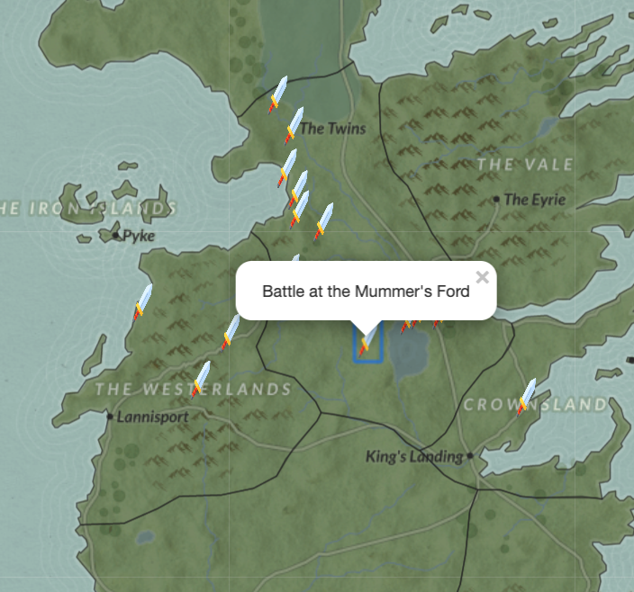
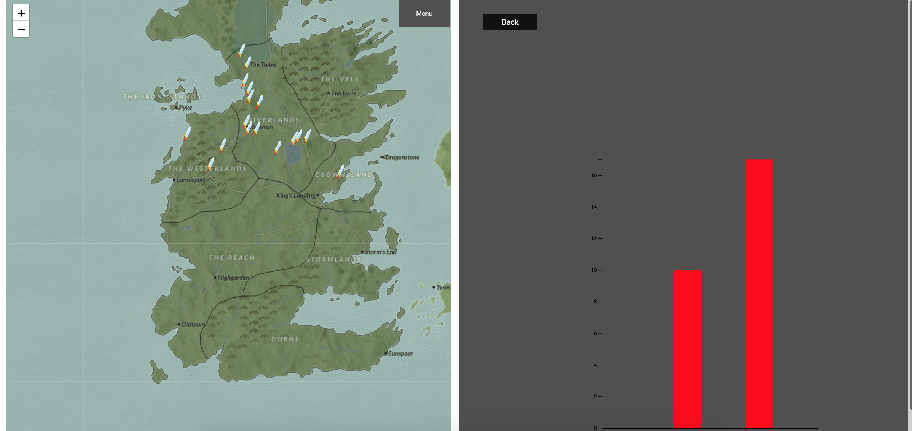
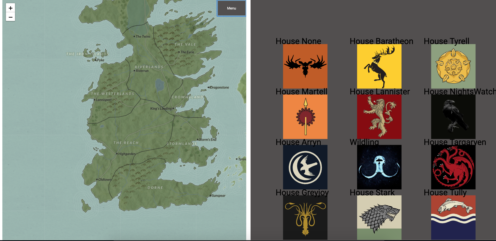
- Implemented map functionality
- Data is separated by houses and being fed into visualization
- Added battle markers and early stages of battle detail views to map
- House is selectable and a rudementary house detail screen has been started
- Further brainstormed how to implement the character prediction data and compare houses against each other
- Added character markers to map
- Implement character probability of survival to house detail screen
- House summary pannel (all users to compare general information about houses)
- Clean up house detail panel
- Build out the battle details pop up